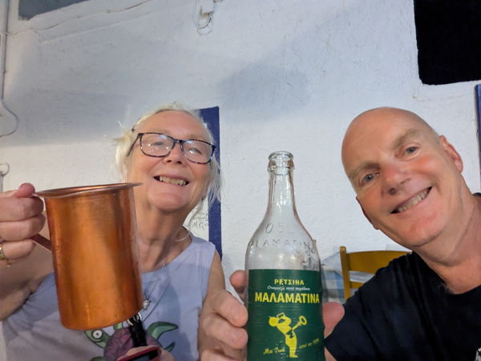
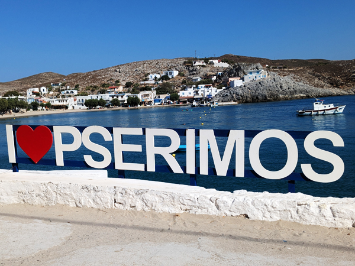
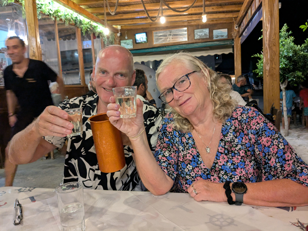
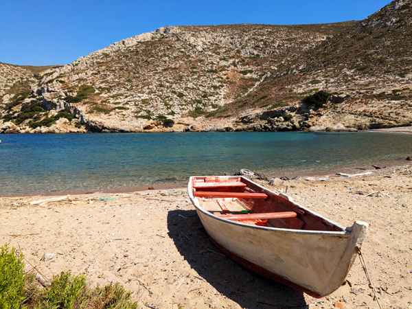
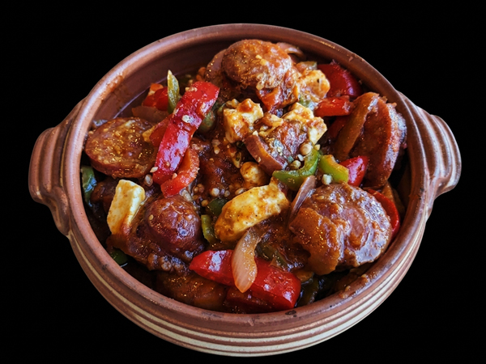

Tuesday 1st September We left Kingsclere on the 8:58 bus (a few minutes later than usual) caught the 9:30 train from Basingstoke to Clapham Junction. We got a train from there to Vauxhall, a tube to Tottenham Hale and then the Stansted Express to the airport. It all went very smoothly and we were at Stansted by about 11:40. Despite there being a lot of people around, we got through security fairly quickly and not long after midday, we were sat in the Wetherspoons. We had a couple of drinks and something to eat before making our way down to our gate. Our Ryanair flight to Kos was due to leave at 14:35 and left just about on time. The flight was surprisingly empty. We had booked seats in Row 2 and had three seats between us so it was a very comfortable flight by Ryanair standards.
We arrived in Kos slightly early just after 8pm. There were about 30 - 40 people in the taxi queue when we came out of the airport but it moved fairly quickly and about 15 minutes later we were on our way to Mastihari. We were dropped outside Hotel Arant which is opposite Harama restaurant. There was no reception there but we had been sent directions and the key was in the door to our room when we arrived. We had spotted Hoggy and Sarah walking towards the restaurant as we got out of the taxi and joined them in the restaurant after we had dropped our bags in the room.

We stayed in there until just after midnight getting through a few jugs of wine and bottles of retsina. A good start to the holiday.
Wednesday 2nd September We were awake by 7:30 and after booking tickets for this mornings ferry, we walked up to the supermarket to buy breakfast and a few things to take to Pserimos. We had breakfast on our balcony and at about 9:15 walked down to the port. Hoggy and Sarah were already there and we all got on the 9:45 ferry. We were on Pserimos about 20 minutes later and were met as we got off the ferry by the owner of the apartments. She collected our luggage and told us we would be able to check in at about midday. We walked along the beach to the apartments. Roz and I went and had a drink in the nearest taverna while Hoggy and Sarah laid on the beach.

We were about to order lunch in the taverna when we got a message from the owner saying the room would be ready in 30 minutes. This was a very Greek 30 minutes but nonetheless, we were shown to our room at around 1pm. We have a room with a big balcony right on the beach. Hoggy and Sarah are in the room above us. After getting unpacked, we had lunch on the balcony and went down to the beach at about 2:30.
The beach is very nice here but it changes dramatically during the day. When we arrived, it was almost totally empty as there is not much accommodation on the island. However, from about 10:30, the day trippers start arriving and the harbour fills up with ferries and pirate-ships from Kalymnos and Kos. Most of them only stay for a couple of hours but the beach is a lot busier for a few hours until they all start departing again at about 4. Despite this, it is not too crowded even at its busiest and is one of the nicest beaches we have been on in Greece.

After a couple of hours in the sun it was back to the room for showers and the first of what will be many typical Greek sessions in the next month. Hoggy and Sarah do not have a balcony so they came down to us for drinks and nibbles just before 7:00. We went to eat at the taverna that we had sat in earlier (Manola's) at about 8:30 but were told that they did not have any tables and we should could come back in 40 minutes. We returned to the balcony for another couple before going back. It was a very nice restaurant with good food and cheap white wine (€10 a litre). Don't clearly remember getting back to the room.
Thursday 3rd September We had booked two nights on Pserimos so did not have much to do today. After breakfast we spent a couple of hours on the beach. After lunch, Roz went back to the beach and I walked to Vathy, a small beach about 40 minutes away. I walked back and joined her on the beach again.

The evening was very similar to yesterday although we had booked a table at Manola's so did not have to wait and our food all came a lot quicker than it had done last night.
Friday 4th September We had breakfast on the balcony and left the apartment at 9:45. Hoggy and Sarah have another two nights here but we were departing for Kalymnos. We walked back to the port and boarded the same ferry that we had come on 48 hours ago. It left on time at 10:10 and got into Kalymnos about 30 minutes later.
We had booked a room for three nights at Elena Village near Kasteli beach, about 11km from the port at Pothia. We were thinking about a taxi but decided to have a look at the bus station and found a bus going where we wanted to go at 11:00. The bus was a bit hot and crowded but at about 11:30, dropped us right outside our hotel. We were able to check into our apartment straight away.
The hotel is probably bigger than any we have stayed at before in Greece but we have a lovely apartment with a balcony giving us spectacular views of Telendos. After unpacking, we went down to the mini-mart to buy a couple of things for lunch and returned to eat on the balcony.
We went down to the pool at 2ish for a couple of hours. At 4, we went to have a look at Kasteli Beach a few minutes North of where we are staying. This was a small stony beach and the sea was quite rough so we probably wont bother spending much time there. Roz went back to the pool while I went for a look round Masouri about half a mile South of us. This was quite a touristy little village with plenty of bars, restaurants and souvenir shops but all looked nice enough. It had a bigger super-market than the one near our hotel so I was able to buy wine for tomorrow. I returned to the hotel and briefly joined Roz at the pool again.

In the evening, we walked back into Masouri while watching the sun setting behind Telendos. We ate at Manifesto Restaurant. The food here was surprisingly good, particularly the sausage saganaki. After eating, we reserved a table for tomorrow evening. We wandered back down to the supermarket and had a look at the beach before returning to the apartment for an early, alcohol-free night.
Saturday 5th September